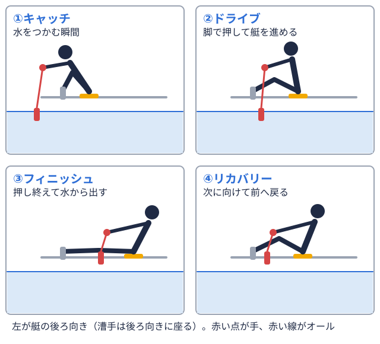

怪我予防 2026-10-13
ボート部の腰痛を予防する方法｜原因・ストレッチ・練習の工夫
大学ボート部（漕艇部）で練習を続けていると、エルゴメーター陸の上で漕ぐ動作を再現するトレーニング機器。タイムの計測にも使う。を長く漕いだ後や、乗艇艇に実際に乗り、水上で漕ぐこと。陸上でのトレーニングと区別して使う。練習の終盤に腰の違和感を覚えたことのある部員は少なくないはずです。ボート競技は、脚・体幹・腕を使って漕ぐ動作を何百回も繰り返すため、腰まわりに負荷がかかりやすい競技だと整理されています。この記事では、ローイングと腰痛の関係を扱った研究をもとに、腰痛が起こりやすい場面、練習の中でできる予防の工夫、練習後のストレッチと補強、痛みが出たときの受診の目安をまとめます。
なお、この記事は一般的な情報の整理であり、診断や治療の代わりにはなりません。しびれや強い痛みがある場合は、自己判断せず医療機関に相談してください。
ボート部の腰痛はどんなときに起こりやすいか
「腰が弱いから痛くなる」とは限らない
腰痛というと、腰の筋力不足が原因だと考えがちです。しかし、ローイング選手の腰痛とフォームの関係を調べた研究を整理したシステマティックレビュー（Nugent ら、2021年、British Journal of Sports Medicine 掲載）では、22本の研究・計429人分のデータが検討されています。このレビューによると、腰痛のない漕手オールを持って艇を前に進める選手。舵を取るだけの人は含めない。  は、キャッチオールの先を水に入れ、水をつかむ瞬間。1回の漕ぎの始まりにあたる。
は、キャッチオールの先を水に入れ、水をつかむ瞬間。1回の漕ぎの始まりにあたる。
一方、腰痛のある漕手では、キャッチで骨盤が後ろに倒れる（後傾する）動きが大きく、体幹の筋肉の使い方も効率的でない傾向が報告されています。つまり、腰そのものよりも「骨盤と股関節がどう動いているか」が腰の負担に関わっている可能性がある、というのが大まかなメッセージです。
疲れたときほど腰が丸まりやすい
同じレビューでは、疲労が進むとキャッチ局面で腰椎の屈曲（腰が丸まる動き）が大きくなること、その傾向はエルゴメーターのほうが強いことも報告されています。練習の終盤やテストの後半など、疲れが溜まってきた場面ほどフォームが崩れやすいという点は、日々の練習管理を考える上で押さえておきたいところです。
なお、同じレビューは「どのタイプのエルゴメーターが怪我の予防に優れるか」については十分な根拠がないとしています。体幹の左右差と腰痛の間にも関連は見られなかったと整理されており、「左右差があるから腰痛になる」と決めつけられるわけではありません。
エルゴの長時間使用と過去の腰痛歴
漕手向けのニュース記事（Junior Rowing News、2020年）では、先行研究を引いて、エルゴメーターを30分を超えて長く使うことと腰痛の関連が示されたこと、過去の腰痛歴・ローイング・エルゴ使用が腰痛のリスク要因として挙げられたことが紹介されています。対象はジュニア選手を含む研究の紹介であり、大学ボート部の部員にそのまま当てはまるとは限りませんが、「長時間のエルゴ」と「以前に腰を痛めたことがある」という2点は、練習計画を立てる際に意識しておきたいポイントです。
2000mの競技時間そのものは、インカレの決勝A優勝を決める最上位の決勝。優勝するにはこのレースに進む必要がある。 では優勝タイムの平均が男子エイト漕ぐ人8人と舵を取る人1人が乗る最大級の艇。1人1本のオールを持つ。で約5分57秒、女子シングルスカル1人乗りの艇。1人が左右2本のオールを持つ。種目コードは「1x」。
では優勝タイムの平均が男子エイト漕ぐ人8人と舵を取る人1人が乗る最大級の艇。1人1本のオールを持つ。で約5分57秒、女子シングルスカル1人乗りの艇。1人が左右2本のオールを持つ。種目コードは「1x」。 で約8分16秒と、種目によって異なります（大学ボートの2000mタイム目安で集計しています）。レースの数分間に対し、日々の練習では長時間のエルゴや反復練習が積み重なるため、疲労時のフォームに目を向けることが大切です。
で約8分16秒と、種目によって異なります（大学ボートの2000mタイム目安で集計しています）。レースの数分間に対し、日々の練習では長時間のエルゴや反復練習が積み重なるため、疲労時のフォームに目を向けることが大切です。
練習の中でできる予防の工夫
骨盤から前傾する意識を持つ
先のレビューの結論は、「脊椎・骨盤・股関節の動きを理解し、腰を丸めて前に倒れるのではなく、骨盤を回して前傾する動きを身につけることが腰痛の減少につながりうる」というものです。キャッチで股関節が十分に曲がらないと、その分を腰の背骨で補うことになり、腰が丸まります。ハムストリングス（太ももの裏）や股関節まわりが硬いと、骨盤が前に回りにくくなります。
練習では、次のような点をコーチや仲間と一緒に確認すると、自分の癖に気づきやすくなります。
- キャッチで背中が丸まっていないか（横から動画を撮って確認する）
- 骨盤が先に回ってから上体が倒れているか
- 疲れてきたときに、キャッチの姿勢が変わっていないか
疲労時の「フォームの質」を基準にする
疲労で腰が丸まりやすくなるのであれば、「何本こなしたか」だけでなく、「疲れてきたときにも姿勢を保てているか」を練習の基準に加える考え方があります。たとえば、後半にフォームが明らかに崩れてきた場合は、その日のエルゴの本数や時間を調整する、といった運用です。練習量の急な増加は、腰に限らず疲労骨折などの怪我のリスクとも関係するとされています（肋骨については肋骨疲労骨折の予防記事で扱っています）。
練習量の組み立て全般については、ボート部の練習量はきつい？も参考になります。
練習後のストレッチと補強
股関節まわりのストレッチ
先ほどの Junior Rowing News の記事では、Perich らの研究（2011年）として、臀部（お尻）と股関節の前側（股関節屈筋）のストレッチを、毎回の練習後に片側1分ずつ行い、あわせて体幹の強化を行ったところ、シーズン中盤・終盤の腰痛の発生が少なかったことが紹介されています。研究の詳細は原典を確認する必要がありますが、練習後に股関節まわりをゆっくり伸ばす習慣は、取り入れやすい方法です。
具体的には、次のようなものがあります。
| 部位 | 例 | 目安 |
|---|---|---|
| お尻（臀部） | 仰向けで片足を反対の膝にかけて引き寄せる | 片側1分程度 |
| 股関節の前側 | 片膝立ちで骨盤を前に押し出す | 片側1分程度 |
| 太ももの裏 | 長座で背筋を伸ばしたまま上体を倒す | 痛みのない範囲で |
ストレッチは、痛みを我慢して無理に伸ばすものではありません。また、ぎっくり腰のような急性期の強い痛みがあるときは、症状を悪化させるおそれがあるため、まずは医師に相談してください。
ハムストリングスと体幹の補強
同記事は、Koutedakis らの研究（1997年）として、ハムストリングスのエクササイズにより、腰痛による練習離脱が少なくなったことも紹介しています。例として、椅子に足をのせて腰を持ち上げる「ハムストリングス・ブリッジ」を3セット（各8〜12回）、週4回行うメニューが紹介されています。
また、フィラデルフィア小児病院（CHOP）の解説では、ローイングの腰・胸まわりの痛みの原因として、猫背の姿勢と過度な骨盤の後傾が挙げられています。これらが体幹の働きを妨げ、腰の筋肉に頼った動きになりやすいとされ、体幹の強化と背骨の位置を保つ意識が予防として勧められています。プランクのような体幹種目や、お尻・太もも裏を使うトレーニングを、乗艇やエルゴの合間に取り入れることが考えられます。
ただし、補強は「やりすぎ」も禁物です。筋トレの後は食事と睡眠でしっかり回復する必要があり、栄養面については大学ボート部の食事メニューも参照してください。
痛みが出たときの対応と受診の目安
早めに申告する雰囲気づくり
レビューや関連資料では、腰痛の予防には、動作の見直しや運動負荷の管理に加え、選手が早めに痛みを報告できる環境づくりも重要だと整理されています。「このくらいなら大丈夫」と我慢して漕ぎ続けると、練習から離れる期間が長引くこともあります。主将やマネージャー、コーチが「違和感の段階で相談してよい」と明示しておくことが、結果的に部全体の稼働率を守ることにつながります。
受診を考えたいサイン
医療情報サイト「メディカルノート」では、腰痛の受診の目安として、次のような場合を挙げています。
- 転倒などのきっかけがはっきりしていて、痛みが強い場合は、急いで受診する
- 脚のしびれや、数日続く痛みがある場合は、診療時間内に受診する
- 歩けないほどの痛み、38度以上の発熱、血尿や排尿時の痛みを伴う場合は、夜間・休日でも受診を考える
練習中だけ出る腰の違和感が繰り返される場合も、整形外科やスポーツ外来に相談し、フォームや練習内容を踏まえた指導を受けることが選択肢になります。
復帰のときの注意
痛みが落ち着いて練習に戻る際には、いきなり元の練習量に戻さないことが大切です。Junior Rowing News の記事では、休んだ期間と同じくらいの時間をかけて、段階的に練習を戻していく考え方が紹介されています。エルゴの時間を短めにする、ロングのエルゴを避ける、といった負荷の調整を、コーチと相談して決めると安心です。
自分の部の練習環境を見直すために
練習計画を考えるとき、他大学が年間でどのように大会や合宿をこなしているかを知っておくと、自分の部の位置づけをつかみやすくなります。全日本大学ローイング選手権（インカレ）の直近の結果は2025年度の結果ページで、各大学の出場種目や戦績は大学別ページ一覧から確認できます。種目ごとの歴代優勝校を見たい場合は、たとえば男子エイトの歴代結果も参考になります。
まとめ
ボート部の腰痛は、「腰が弱いから」だけで起こるわけではなく、キャッチで股関節・骨盤がどう動いているか、疲労時にフォームが崩れていないか、といった動きの質が関わっている可能性があります。予防の基本は次の4点です。
- 骨盤から前傾する動きを意識し、疲れてきたときの姿勢を動画などで確認する
- 長時間のエルゴなど、負荷が一部の部員・一部の期間に偏りすぎていないか見直す
- 練習後に股関節まわりを伸ばし、ハムストリングスと体幹を補強する
- 痛みやしびれが出たら我慢せず、早めに相談・受診する
出典
- Nugent FJ, Vinther A, McGregor A, Thornton JS, Wilkie K, Wilson F.「The relationship between rowing-related low back pain and rowing biomechanics: a systematic review」British Journal of Sports Medicine 2021;55(11):616-630（論文情報（University of Limerick））
- Matt Anthis「Preventing Lower Back Pain in Rowers」Junior Rowing News、2020年9月30日（記事）。Perich ら（2011年）、Teitz ら（2002年）、Koutedakis ら（1997年）の研究を紹介した内容を参照しました。原典は未確認のため、数値はこの記事の紹介内容に基づきます。
- Children's Hospital of Philadelphia「Rowing: Benefits and Common Injuries」（ページ）
- メディカルノート「腰痛」（症状ページ）
- 大会結果・大学別データは日本ローイング協会（JARA）公式サイト（大会情報）の公表内容に基づいています。
本記事は一般的な情報の紹介であり、症状がある場合は医療機関にご相談ください。
この部活・競技を応援したい方へ
取材してほしい部活を募集中
オフシーズン・引退後に、長期インターンという選択
部活で培った力を実務で試す。16タイプ診断（30秒）で合う企業がわかります。